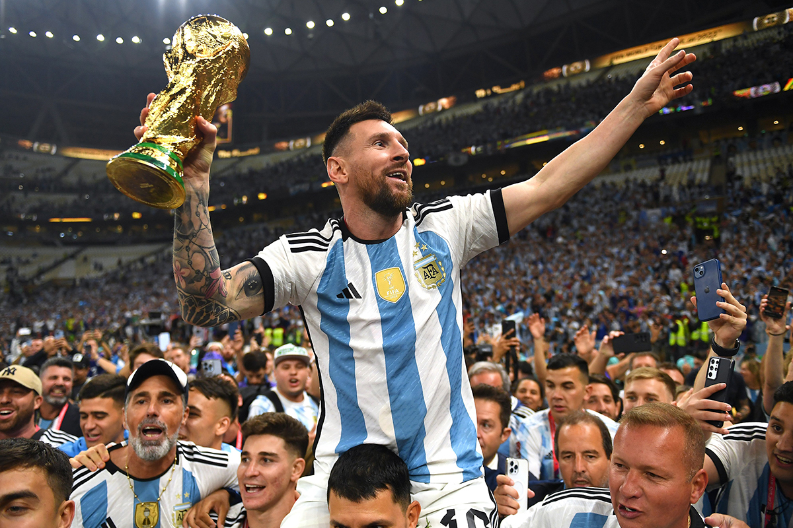

Lionel Messi is a professional soccer player who is widely regarded as one of the greatest players in the history of the sport. He was born in Rosario, Argentina in 1987 and began his career playing for the youth team of Newell's Old Boys. In 2000, he was signed by FC Barcelona, where he has played for the first team since 2004. Messi has won numerous individual and team accolades during his career, including 10 La Liga titles and 4 UEFA Champions League titles with Barcelona, as well as 6 Ballon d'Or awards, which are given annually to the best player in the world. He has also represented the Argentine national team in multiple international tournaments, including the World Cup. In addition to his skill and success on the pitch, Messi is known for his humble personality and charitable work off the field.
This is the picture of Lionel Messi.
